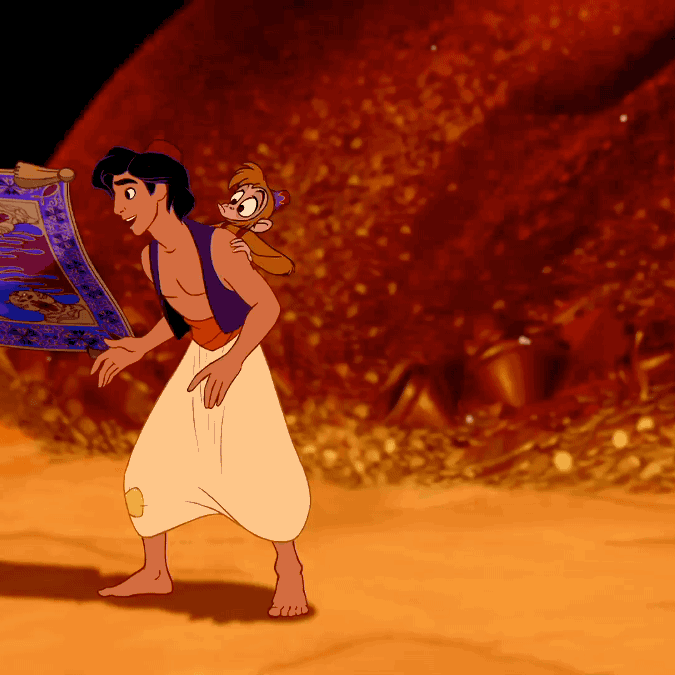

Karpet Terbang: Teman Ajaib yang Membawa Petualangan
Karpet terbang adalah salah satu benda ajaib paling ikonik dalam cerita Aladdin. Karpet ini ditemukan Aladdin di dalam gua rahasia bersama dengan lampu ajaib. Tidak hanya berfungsi sebagai alat transportasi, karpet ini adalah makhluk ajaib yang memiliki "jiwa" sendiri—ia bisa mengerti, merespons, bahkan menunjukkan emosi lewat gerakan tubuh dan kainnya yang lentur. Karpet ini menjadi sahabat setia Aladdin, hadir di saat-saat penting untuk membantu dan melindungi.
Yang membuat karpet ini unik bukan hanya kemampuannya terbang, tetapi juga sifatnya yang lucu, setia, dan terkadang sedikit usil. Walaupun tidak berbicara, ia mampu menunjukkan perasaan: marah, senang, takut, atau bahkan cemburu! Dalam banyak situasi berbahaya, karpet menunjukkan keberanian luar biasa—menyelamatkan Aladdin dari jurang, melawan musuh, bahkan mengorbankan diri untuk teman-temannya. Karpet terbang bukan sekadar alat bantu dalam petualangan, melainkan bagian dari keluarga bagi Aladdin dan kawan-kawan. Keberadaannya membawa warna, kehangatan, dan semangat dalam kisah ajaib yang penuh keajaiban dan persahabatan ini.
Mau lihat petualangan seru bersama karpet terbang? Yuk, lanjut ke halaman berikutnya!